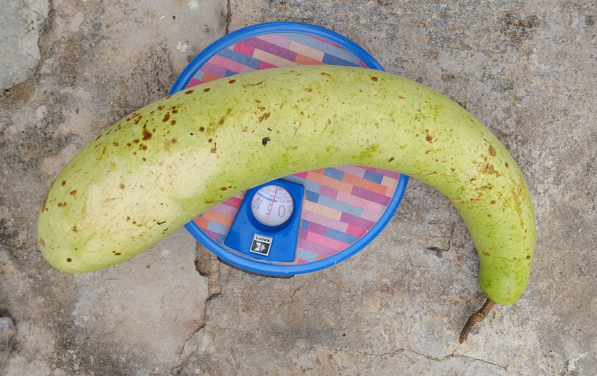

Preserving Biodiversity, One Seed at a Time
Our Indigenous Seed Bank is a living archive of native crop varieties—nurtured, saved, and shared to protect our agricultural heritage and food sovereignty.

Putan Pandu Rice
winter seasonal fruit, grown in traditional multi crop farming practices in Telangana.
Native veriety tomoto
Juicy and Tasty with fragrance

Desi Ridge Gourd
Heirloom pulse variety known for its rich taste and soil-enriching properties.

Desi Bottle Gourd
Ancient bottle gourd with medicinal and culinary value.